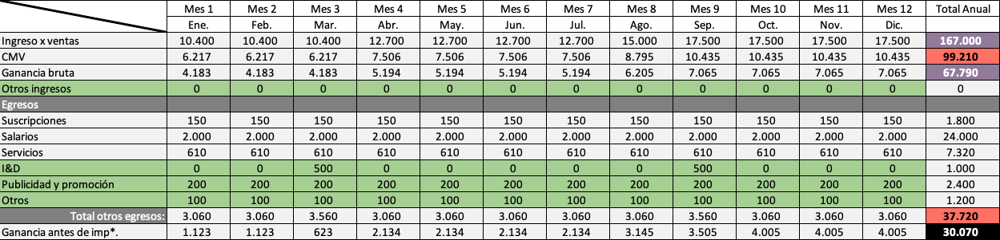

Experiencias digitales coherentes y profesionales.
Accesibilidad WCAG como eje central.
Diseño al servicio de la misión institucional.
Mayor conciencia sobre inclusión y accesibilidad digital
Saturación de agencias generalistas
Crecimiento de organizaciones con propósito social
Tocá el nombre de un competidor para comparar directo contra Blest.
| Criterio | MANDARiNA | Weeik | Blest Agency ★ |
|---|---|---|---|
| Foco del segmento | Corporativo / General | Creativo / Comercial | Especialista (Fe) |
| Accesibilidad WCAG | No es eje central | Estética primero | Atributo distintivo |
| Posicionamiento | Generalista | Creativo | Especialista ★ |
Miami, FL como sede. Operación remota global. Foco en hispanohablantes en EE.UU. y Latinoamérica.
Organizaciones con valores católicos que entienden la presencia digital como extensión de su misión pastoral.
Solución estratégica, funcional y accesible. Calidad, personalización y coherencia institucional.
Tocá cada cuadrante para ver más detalle.
Agencias digitales con propuestas genéricas y poca comprensión institucional.
Quiere comunicar profesionalismo y generar confianza. Busca que su organización sea comprendida y valorada.
Que la presencia digital es indispensable y que la accesibilidad comienza a ser una necesidad real.
Busca agencias alineadas con sus valores y prioriza relaciones de trabajo más cercanas y personalizadas.
"Para organizaciones, instituciones y marcas con propósito que buscan construir una presencia digital clara y profesional, Blest Agency desarrolla soluciones estratégicas y accesibles para comunicar de forma coherente su identidad."
Los cinco factores que definen la solidez del modelo. Tocá cada eje del gráfico para ver el detalle.
Escucha y diagnóstico
Estructura, mensajes, accesibilidad
Squarespace + contenido + WCAG
Auditoría de accesibilidad
Revisión final + publicación
Reels institucionales en Instagram y LinkedIn · Posteos educativos sobre accesibilidad
Casos de éxito before/after · Landing page con CTA a Discovery Session gratuita
Discovery Session gratuita (venta consultiva) · Referidos activos de clientes satisfechos
Presencias digitales que reflejan fielmente la misión y valores de cada organización.
Integración de estrategia, diseño y accesibilidad en un solo proceso, por alguien que comprende el universo institucional católico.
Cálido, profesional y cercano. No habla de "marketing" sino de misión, comunidad y coherencia institucional.
Revisión periódica
Riesgo mayor
①Riesgo aceptable
②Seguimiento constante
Plan B: Documentación de procesos · Red de colegas de cobertura · Cláusula de fuerza mayor en contratos · Margen del 20% de capacidad libre
Plan B: Conocimiento de plataformas alternativas (WordPress, Webflow) · Contratos sin exclusividad de plataforma
